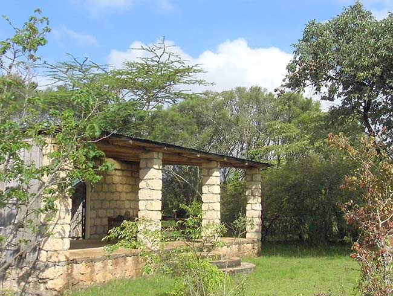

Uzima bird sanctuary is one of the largest bird rescue orphanages and protection center in Nairobi.We are proud to be celebrating our tenth anniversary since our conception by missionary Dr. Ludwiq Vandel.
Just an hours's drive from the city, the Uzima Sanctuary is private land adjoining the Nairobi National Park, a rich landscape of rolling plains situated between the deep gorges of the Embakasi & Kiserian rivers. The Sanctuary is an ideal location to get away from the city without travelling distances & sacrificing time & expense
